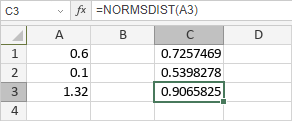

NORMSDIST funkcija
Funkcija NORMSDIST je jedna od statističkih funkcija. Koristi se za vraćanje standardne normalne kumulativne raspodele.
Sintaksa
NORMSDIST(z)
Funkcija NORMSDIST ima sledeći argument:
| Argument | Opis |
|---|---|
| z | Numerička vrednost za koju želite da pronađete standardnu normalnu kumulativnu raspodelu. |
Napomene
Kako primeniti funkciju NORMSDIST.
Primeri
Slika ispod prikazuje rezultat koji vraća funkcija NORMSDIST.
